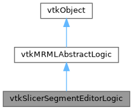

|
Slicer 5.13
Slicer is a multi-platform, free and open source software package for visualization and medical image computing
|
Loading...
Searching...
No Matches
|
Slicer 5.13
Slicer is a multi-platform, free and open source software package for visualization and medical image computing
|
Helper segment editor logic for qMRMLSegmentEditorWidget and its associated effects. More...
#include <Modules/Loadable/Segmentations/Logic/vtkSlicerSegmentEditorLogic.h>


Public Types | |
| enum | Events { SegmentationHistoryChangedEvent = vtkCommand::UserEvent + 1 , PauseRenderEvent , ResumeRenderEvent } |
| enum | ModificationMode { ModificationModeSet , ModificationModeAdd , ModificationModeRemove , ModificationModeRemoveAll } |
| typedef vtkMRMLAbstractLogic | Superclass |
 Public Types inherited from vtkMRMLAbstractLogic Public Types inherited from vtkMRMLAbstractLogic | |
| typedef vtkObject | Superclass |
| typedef void(vtkMRMLAbstractLogic::* | TaskFunctionPointer) (void *clientdata) |
Public Member Functions | |
| std::string | AddEmptySegment (const std::string &segmentId="", int segmentStatus=0) const |
| bool | CanAddSegments () const |
| bool | CanRedo () const |
| bool | CanRemoveSegments () const |
| bool | CanTriviallyConvertSourceRepresentationToBinaryLabelMap () const |
| bool | CanUndo () const |
| void | ClearUndoState () const |
| Clears the Undo/Redo history. | |
| bool | ContainsClosedSurfaceRepresentation () const |
| true if the current segmentation is valid and contains a closed surface representation | |
| void | CreateAndSetBlankSourceVolumeFromSegmentationGeometry () const |
| Creates a blank source volume matching the segmentation geometry. Usually called when no source volume is currently set. | |
| void | CreateAndSetBlankSourceVolumeIfNeeded () const |
| If no source volume is selected but a valid geometry is specified then create and store a blank source volume. | |
| void | ExportSegmentationToColorTableNode () const |
| Export the current segmentation to a new color table node. | |
| vtkOrientedImageData * | GetAlignedSourceVolume () const |
| Current aligned source volume. | |
| virtual const char * | GetClassName () |
| std::string | GetCurrentSegmentID () const |
| int | GetCurrentSegmentIndex () const |
| Returns the current segmentation segment index. -1 if invalid. | |
| std::string | GetDefaultTerminologyEntry () const |
| Returns the terminology entry value used as default when adding empty segments. | |
| vtkOrientedImageData * | GetMaskLabelmap () const |
| Returns the current mask labelmap. | |
| int | GetMaximumNumberOfUndoStates () const |
| Get maximum number of saved undo/redo states. | |
| vtkOrientedImageData * | GetModifierLabelmap () const |
| Returns the current modifier label map. | |
| std::string | GetNextSegmentID (int offset, bool visibleOnly) const |
| Returns the segment ID at given offset. | |
| vtkOrientedImageData * | GetReferenceGeometryImage () const |
| Returns the current reference geometry image. | |
| std::string | GetReferenceImageGeometryString () const |
| Returns the current reference geometry string. | |
| vtkSegmentation * | GetSegmentation () const |
| Current segmentation associated with the segmentation node. | |
| bool | GetSegmentationIJKToRAS (vtkMatrix4x4 *ijkToRas) const |
| vtkMRMLSegmentationNode * | GetSegmentationNode () const |
| Get currently selected segmentation MRML node. | |
| vtkMRMLSegmentEditorNode * | GetSegmentEditorNode () const |
| Get the segment editor parameter set node. | |
| std::vector< std::string > | GetSegmentIDs () const |
| Return all the segment IDS present in the segmentation. Empty if invalid or no segment. | |
| vtkSegment * | GetSelectedSegment () const |
| Get the current segment. nullptr if invalid or no selection. | |
| vtkOrientedImageData * | GetSelectedSegmentLabelmap () const |
| Get the current segments labelmap. | |
| double | GetSliceSpacing (vtkMRMLSliceNode *sliceNode) const |
| Return the slice spacing matching the input slice node. | |
| vtkMRMLScalarVolumeNode * | GetSourceVolumeNode () const |
| Get the current volume node. | |
| bool | GetVerbose () const |
| Returns warning verbosity. | |
| std::vector< std::string > | GetVisibleSegmentIDs () const |
| Return all segment currently visible in any view. | |
| virtual int | IsA (const char *type) |
| bool | IsSegmentationDisplayableInView (vtkMRMLAbstractViewNode *viewNode) const |
| Return true if the current segmentation is displayed in the input view node. False if invalid segmentation or view node. | |
| bool | IsSegmentationNodeValid () const |
| Return true if the current segmentation node is valid. | |
| bool | IsSegmentIdValid (const std::string &segmentId) const |
| Return true when Segment ID is defined and present in the current segmentation. | |
| bool | IsSegmentIdVisible (const std::string &segmentID) const |
| Return true if the segment ID is visible in any view. False if not visible or invalid. | |
| bool | IsSelectedSegmentVisible () const |
| Return true if the current segment is visible in any view. | |
| void | ModifySegmentByLabelmap (vtkMRMLSegmentationNode *segmentationNode, const char *segmentID, vtkOrientedImageData *modifierLabelmap, ModificationMode modificationMode, bool isPerSegment, bool bypassMasking) |
| void | ModifySegmentByLabelmap (vtkMRMLSegmentationNode *segmentationNode, const char *segmentID, vtkOrientedImageData *modifierLabelmap, ModificationMode modificationMode, const int modificationExtent[6], bool isPerSegment, bool bypassMasking) |
| void | PauseRender () |
| Trigger the PauseRenderEvent. | |
| void | Redo () const |
| Restores next saved state of the segmentation. | |
| std::string | RemoveSelectedSegment () const |
| Remove the current segment and return the following segment in the list if any valid. | |
| bool | ResetModifierLabelmapToDefault () const |
| void | ResumeRender () |
| Trigger the ResumeRenderEvent. | |
| bool | SaveStateForUndo () const |
| void | SelectFirstSegment (bool visibleOnly) const |
| Selects the first segment in the current segmentation. | |
| void | SelectNextSegment (bool visibleOnly) const |
| Selects the next segment in the current segmentation. | |
| void | SelectPreviousSegment (bool visibleOnly) const |
| Selects the previous segment in the current segmentation. | |
| void | SelectSegmentAtOffset (int offset, bool visibleOnly) const |
| void | SetCurrentSegmentID (const std::string &segmentID) const |
| Set selected segment by its ID. | |
| void | SetDefaultTerminologyEntry (const std::string &entry) |
| Set the default terminology to use when adding new segments. | |
| void | SetMaximumNumberOfUndoStates (int) const |
| Set maximum number of saved undo/redo states. | |
| void | SetSegmentationHistory (const vtkSmartPointer< vtkSegmentationHistory > &segmentationHistory) |
| void | SetSegmentationNode (vtkMRMLNode *node) const |
| Set segmentation MRML node. | |
| void | SetSegmentationNodeID (const std::string &nodeID) const |
| Set segmentation MRML node by its ID. | |
| void | SetSegmentEditorNode (vtkMRMLSegmentEditorNode *newSegmentEditorNode) |
| Set the segment editor parameter set node. | |
| bool | SetSourceRepresentationToBinaryLabelMap () const |
| void | SetSourceVolumeNode (vtkMRMLNode *node) const |
| void | SetSourceVolumeNodeID (const std::string &nodeID) const |
| Set source volume MRML node by its ID. | |
| void | SetVerbose (bool isVerbose) |
| void | ToggleSegmentationSurfaceRepresentation (bool isSurfaceRepresentationOn) const |
| Create/remove closed surface model for the segmentation that is automatically updated when editing. | |
| void | ToggleSourceVolumeIntensityMask () const |
| Toggle the intensity mask currently set on the segmentation. | |
| bool | TrivialSetSourceRepresentationToBinaryLabelmap () const |
| void | Undo () const |
| Restores previous saved state of the segmentation. | |
| bool | UpdateAlignedSourceVolume () |
| Updates a resampled source volume in a geometry aligned with default modifierLabelmap. | |
| bool | UpdateMaskLabelmap () const |
| bool | UpdateReferenceGeometryImage () const |
| Update the reference geometry image to the current segmentation. | |
| bool | UpdateSelectedSegmentLabelmap () const |
| Updates selected segment labelmap in a geometry aligned with default modifierLabelmap. | |
| void | UpdateVolume (void *volumeToUpdate, bool &success) |
| Public Member Functions inherited from vtkMRMLAbstractLogic | |
| virtual vtkMRMLApplicationLogic * | GetMRMLApplicationLogic () const |
| Get access to overall application state. | |
| vtkMRMLScene * | GetMRMLScene () const |
| Return a reference to the current MRML scene. | |
| void | PrintSelf (ostream &os, vtkIndent indent) override |
| virtual void | SetMRMLApplicationLogic (vtkMRMLApplicationLogic *logic) |
| void | SetMRMLScene (vtkMRMLScene *newScene) |
| Set and observe the MRMLScene. | |
Static Public Member Functions | |
| static void | AppendImage (vtkOrientedImageData *inputImage, vtkOrientedImageData *appendedImage) |
| Append image onto image. Resamples appended image and saves result in input image. | |
| static void | AppendPolyMask (vtkOrientedImageData *input, vtkPolyData *polyData, vtkMRMLSliceNode *sliceNode, vtkMRMLSegmentationNode *segmentationNode=nullptr) |
| Rasterize a poly data onto the input image into the slice view. | |
| static void | CreateMaskImageFromPolyData (vtkPolyData *polyData, vtkOrientedImageData *outputMask, vtkMRMLSliceNode *sliceNode) |
| Create a slice view screen space (2D) mask image for the given polydata. | |
| static std::string | GetReferenceImageGeometryStringFromSegmentation (vtkSegmentation *segmentation) |
| Returns the reference geometry string matching the input segmentation. | |
| static double | GetSliceSpacing (vtkMRMLSliceNode *sliceNode, vtkMRMLSliceLogic *sliceLogic) |
| static void | ImageToWorldMatrix (vtkMRMLVolumeNode *node, vtkMatrix4x4 *ijkToRas) |
| static void | ImageToWorldMatrix (vtkOrientedImageData *image, vtkMRMLSegmentationNode *node, vtkMatrix4x4 *ijkToRas) |
| static bool | IsSegmentIdInList (const std::string &segmentID, const std::vector< std::string > &visibleSegmentIDs) |
| Return true if the segment ID is present in the input list. | |
| static int | IsTypeOf (const char *type) |
| static vtkSlicerSegmentEditorLogic * | New () |
| static std::array< int, 2 > | RasToXy (double ras[3], vtkMRMLSliceNode *sliceNode) |
| Convert RAS position to XY in-slice position. | |
| static vtkSlicerSegmentEditorLogic * | SafeDownCast (vtkObject *o) |
| static void | XyToIjk (double xy[2], int outputIjk[3], vtkMRMLSliceNode *sliceNode, vtkOrientedImageData *image, vtkMRMLTransformNode *parentTransform=nullptr) |
| Convert XY in-slice position to image IJK position. | |
| static void | XyToIjk (int xy[2], int outputIjk[3], vtkMRMLSliceNode *sliceNode, vtkOrientedImageData *image, vtkMRMLTransformNode *parentTransform=nullptr) |
| Convert XY in-slice position to image IJK position. | |
| static std::array< int, 3 > | XyToIjk (int xy[2], vtkMRMLSliceNode *sliceNode, vtkOrientedImageData *image, vtkMRMLTransformNode *parentTransform=nullptr) |
| Convert XY in-slice position to image IJK position, python accessor method. | |
| static void | XyToRas (double xy[2], double outputRas[3], vtkMRMLSliceNode *sliceNode) |
| Convert XY in-slice position to RAS position. | |
| static void | XyToRas (int xy[2], double outputRas[3], vtkMRMLSliceNode *sliceNode) |
| Convert XY in-slice position to RAS position. | |
| static std::array< double, 3 > | XyToRas (int xy[2], vtkMRMLSliceNode *sliceNode) |
| Convert XY in-slice position to RAS position, python accessor method. | |
| static void | XyzToIjk (double inputXyz[3], int outputIjk[3], vtkMRMLSliceNode *sliceNode, vtkOrientedImageData *image, vtkMRMLTransformNode *parentTransform=nullptr) |
| Convert XYZ slice view position to image IJK position,. | |
| static std::array< int, 3 > | XyzToIjk (double inputXyz[3], vtkMRMLSliceNode *sliceNode, vtkOrientedImageData *image, vtkMRMLTransformNode *parentTransform=nullptr) |
| Convert XYZ slice view position to image IJK position, python accessor method,. | |
| static void | XyzToRas (double inputXyz[3], double outputRas[3], vtkMRMLSliceNode *sliceNode) |
| static std::array< double, 3 > | XyzToRas (double inputXyz[3], vtkMRMLSliceNode *sliceNode) |
| Static Public Member Functions inherited from vtkMRMLAbstractLogic | |
| static int | IsTypeOf (const char *type) |
| static vtkMRMLAbstractLogic * | New () |
| static vtkMRMLAbstractLogic * | SafeDownCast (vtkObject *o) |
Protected Member Functions | |
| void | ProcessMRMLNodesEvents (vtkObject *caller, unsigned long event, void *callData) override |
| Update segment editor node, segmentation node and segment history observers. | |
| vtkSlicerSegmentEditorLogic () | |
| ~vtkSlicerSegmentEditorLogic () override | |
| Protected Member Functions inherited from vtkMRMLAbstractLogic | |
| int | EndModify (bool wasModifying) |
| virtual bool | EnterMRMLLogicsCallback () const |
| virtual bool | EnterMRMLNodesCallback () const |
| virtual bool | EnterMRMLSceneCallback () const |
| bool | GetDisableModifiedEvent () const |
| int | GetInMRMLLogicsCallbackFlag () const |
| int | GetInMRMLNodesCallbackFlag () const |
| int | GetInMRMLSceneCallbackFlag () const |
| vtkCallbackCommand * | GetMRMLLogicsCallbackCommand () |
| vtkObserverManager * | GetMRMLLogicsObserverManager () const |
| vtkCallbackCommand * | GetMRMLNodesCallbackCommand () |
| vtkObserverManager * | GetMRMLNodesObserverManager () const |
| vtkCallbackCommand * | GetMRMLSceneCallbackCommand () |
| vtkObserverManager * | GetMRMLSceneObserverManager () const |
| int | GetPendingModifiedEventCount () const |
| int | GetProcessingMRMLSceneEvent () const |
| Return the event id currently processed or 0 if any. | |
| int | InvokePendingModifiedEvent () |
| void | Modified () override |
| virtual void | ObserveMRMLScene () |
| virtual void | OnMRMLNodeModified (vtkMRMLNode *) |
| virtual void | OnMRMLSceneEndBatchProcess () |
| virtual void | OnMRMLSceneEndClose () |
| virtual void | OnMRMLSceneEndImport () |
| virtual void | OnMRMLSceneEndRestore () |
| virtual void | OnMRMLSceneNew () |
| virtual void | OnMRMLSceneNodeAdded (vtkMRMLNode *) |
| virtual void | OnMRMLSceneNodeRemoved (vtkMRMLNode *) |
| virtual void | OnMRMLSceneStartBatchProcess () |
| virtual void | OnMRMLSceneStartClose () |
| virtual void | OnMRMLSceneStartImport () |
| virtual void | OnMRMLSceneStartRestore () |
| virtual void | ProcessMRMLLogicsEvents (vtkObject *caller, unsigned long event, void *callData) |
| virtual void | ProcessMRMLSceneEvents (vtkObject *caller, unsigned long event, void *callData) |
| virtual void | RegisterNodes () |
| void | SetAndObserveMRMLSceneEventsInternal (vtkMRMLScene *newScene, vtkIntArray *events, vtkFloatArray *priorities=nullptr) |
| void | SetDisableModifiedEvent (bool onOff) |
| void | SetInMRMLLogicsCallbackFlag (int flag) |
| void | SetInMRMLNodesCallbackFlag (int flag) |
| void | SetInMRMLSceneCallbackFlag (int flag) |
| virtual void | SetMRMLSceneInternal (vtkMRMLScene *newScene) |
| void | SetProcessingMRMLSceneEvent (int event) |
| bool | StartModify () |
| virtual void | UnobserveMRMLScene () |
| virtual void | UpdateFromMRMLScene () |
| vtkMRMLAbstractLogic () | |
| ~vtkMRMLAbstractLogic () override | |
Additional Inherited Members | |
| Static Protected Member Functions inherited from vtkMRMLAbstractLogic | |
| static void | MRMLLogicsCallback (vtkObject *caller, unsigned long eid, void *clientData, void *callData) |
| MRMLLogicCallback is a static function to relay modified events from the logics. | |
| static void | MRMLNodesCallback (vtkObject *caller, unsigned long eid, void *clientData, void *callData) |
| MRMLNodesCallback is a static function to relay modified events from the nodes. | |
| static void | MRMLSceneCallback (vtkObject *caller, unsigned long eid, void *clientData, void *callData) |
Helper segment editor logic for qMRMLSegmentEditorWidget and its associated effects.
Provides common logic to access and modify the segmentation.
Definition at line 62 of file vtkSlicerSegmentEditorLogic.h.
Definition at line 66 of file vtkSlicerSegmentEditorLogic.h.
| Enumerator | |
|---|---|
| SegmentationHistoryChangedEvent | |
| PauseRenderEvent | |
| ResumeRenderEvent | |
Definition at line 76 of file vtkSlicerSegmentEditorLogic.h.
| Enumerator | |
|---|---|
| ModificationModeSet | |
| ModificationModeAdd | |
| ModificationModeRemove | |
| ModificationModeRemoveAll | |
Definition at line 68 of file vtkSlicerSegmentEditorLogic.h.
|
protected |
|
overrideprotected |
| std::string vtkSlicerSegmentEditorLogic::AddEmptySegment | ( | const std::string & | segmentId = "", |
| int | segmentStatus = 0 ) const |
Add empty segment in the current segmentation node
| segmentId | ID of added segment. If empty then a default unique ID will be generated. |
| segmentStatus | Status of added segment from |
|
static |
Append image onto image. Resamples appended image and saves result in input image.
|
static |
Rasterize a poly data onto the input image into the slice view.
| bool vtkSlicerSegmentEditorLogic::CanAddSegments | ( | ) | const |
| bool vtkSlicerSegmentEditorLogic::CanRedo | ( | ) | const |
| bool vtkSlicerSegmentEditorLogic::CanRemoveSegments | ( | ) | const |
| bool vtkSlicerSegmentEditorLogic::CanTriviallyConvertSourceRepresentationToBinaryLabelMap | ( | ) | const |
| bool vtkSlicerSegmentEditorLogic::CanUndo | ( | ) | const |
| void vtkSlicerSegmentEditorLogic::ClearUndoState | ( | ) | const |
Clears the Undo/Redo history.
| bool vtkSlicerSegmentEditorLogic::ContainsClosedSurfaceRepresentation | ( | ) | const |
true if the current segmentation is valid and contains a closed surface representation
| void vtkSlicerSegmentEditorLogic::CreateAndSetBlankSourceVolumeFromSegmentationGeometry | ( | ) | const |
Creates a blank source volume matching the segmentation geometry. Usually called when no source volume is currently set.
| void vtkSlicerSegmentEditorLogic::CreateAndSetBlankSourceVolumeIfNeeded | ( | ) | const |
If no source volume is selected but a valid geometry is specified then create and store a blank source volume.
|
static |
Create a slice view screen space (2D) mask image for the given polydata.
| void vtkSlicerSegmentEditorLogic::ExportSegmentationToColorTableNode | ( | ) | const |
Export the current segmentation to a new color table node.
| vtkOrientedImageData * vtkSlicerSegmentEditorLogic::GetAlignedSourceVolume | ( | ) | const |
Current aligned source volume.
|
virtual |
Reimplemented from vtkMRMLAbstractLogic.
| std::string vtkSlicerSegmentEditorLogic::GetCurrentSegmentID | ( | ) | const |
Get segment ID of selected segment
| int vtkSlicerSegmentEditorLogic::GetCurrentSegmentIndex | ( | ) | const |
Returns the current segmentation segment index. -1 if invalid.
| std::string vtkSlicerSegmentEditorLogic::GetDefaultTerminologyEntry | ( | ) | const |
Returns the terminology entry value used as default when adding empty segments.
| vtkOrientedImageData * vtkSlicerSegmentEditorLogic::GetMaskLabelmap | ( | ) | const |
Returns the current mask labelmap.
| int vtkSlicerSegmentEditorLogic::GetMaximumNumberOfUndoStates | ( | ) | const |
Get maximum number of saved undo/redo states.
| vtkOrientedImageData * vtkSlicerSegmentEditorLogic::GetModifierLabelmap | ( | ) | const |
Returns the current modifier label map.
| std::string vtkSlicerSegmentEditorLogic::GetNextSegmentID | ( | int | offset, |
| bool | visibleOnly ) const |
Returns the segment ID at given offset.
| offset | Either a positive or negative offset value |
| visibleOnly | if true, offset will represent the number of visible segments skipped. |
| vtkOrientedImageData * vtkSlicerSegmentEditorLogic::GetReferenceGeometryImage | ( | ) | const |
Returns the current reference geometry image.
| std::string vtkSlicerSegmentEditorLogic::GetReferenceImageGeometryString | ( | ) | const |
Returns the current reference geometry string.
|
static |
Returns the reference geometry string matching the input segmentation.
| vtkSegmentation * vtkSlicerSegmentEditorLogic::GetSegmentation | ( | ) | const |
Current segmentation associated with the segmentation node.
| bool vtkSlicerSegmentEditorLogic::GetSegmentationIJKToRAS | ( | vtkMatrix4x4 * | ijkToRas | ) | const |
Return segmentation node's internal labelmap IJK to renderer world coordinate transform. If cannot be retrieved (segmentation is not defined, non-linearly transformed, etc.) then false is returned;
| vtkMRMLSegmentationNode * vtkSlicerSegmentEditorLogic::GetSegmentationNode | ( | ) | const |
Get currently selected segmentation MRML node.
| vtkMRMLSegmentEditorNode * vtkSlicerSegmentEditorLogic::GetSegmentEditorNode | ( | ) | const |
Get the segment editor parameter set node.
| std::vector< std::string > vtkSlicerSegmentEditorLogic::GetSegmentIDs | ( | ) | const |
Return all the segment IDS present in the segmentation. Empty if invalid or no segment.
| vtkSegment * vtkSlicerSegmentEditorLogic::GetSelectedSegment | ( | ) | const |
Get the current segment. nullptr if invalid or no selection.
| vtkOrientedImageData * vtkSlicerSegmentEditorLogic::GetSelectedSegmentLabelmap | ( | ) | const |
Get the current segments labelmap.
| double vtkSlicerSegmentEditorLogic::GetSliceSpacing | ( | vtkMRMLSliceNode * | sliceNode | ) | const |
Return the slice spacing matching the input slice node.
|
static |
| vtkMRMLScalarVolumeNode * vtkSlicerSegmentEditorLogic::GetSourceVolumeNode | ( | ) | const |
Get the current volume node.
| bool vtkSlicerSegmentEditorLogic::GetVerbose | ( | ) | const |
Returns warning verbosity.
| std::vector< std::string > vtkSlicerSegmentEditorLogic::GetVisibleSegmentIDs | ( | ) | const |
Return all segment currently visible in any view.
|
static |
Return matrix for volume node that takes into account the IJKToRAS and any linear transforms that have been applied
|
static |
Return matrix for oriented image data that takes into account the image to world and any linear transforms that have been applied on the given segmentation
|
virtual |
Reimplemented from vtkMRMLAbstractLogic.
| bool vtkSlicerSegmentEditorLogic::IsSegmentationDisplayableInView | ( | vtkMRMLAbstractViewNode * | viewNode | ) | const |
Return true if the current segmentation is displayed in the input view node. False if invalid segmentation or view node.
| bool vtkSlicerSegmentEditorLogic::IsSegmentationNodeValid | ( | ) | const |
Return true if the current segmentation node is valid.
|
static |
Return true if the segment ID is present in the input list.
| bool vtkSlicerSegmentEditorLogic::IsSegmentIdValid | ( | const std::string & | segmentId | ) | const |
Return true when Segment ID is defined and present in the current segmentation.
| bool vtkSlicerSegmentEditorLogic::IsSegmentIdVisible | ( | const std::string & | segmentID | ) | const |
Return true if the segment ID is visible in any view. False if not visible or invalid.
| bool vtkSlicerSegmentEditorLogic::IsSelectedSegmentVisible | ( | ) | const |
Return true if the current segment is visible in any view.
|
static |
| void vtkSlicerSegmentEditorLogic::ModifySegmentByLabelmap | ( | vtkMRMLSegmentationNode * | segmentationNode, |
| const char * | segmentID, | ||
| vtkOrientedImageData * | modifierLabelmap, | ||
| ModificationMode | modificationMode, | ||
| bool | isPerSegment, | ||
| bool | bypassMasking ) |
| void vtkSlicerSegmentEditorLogic::ModifySegmentByLabelmap | ( | vtkMRMLSegmentationNode * | segmentationNode, |
| const char * | segmentID, | ||
| vtkOrientedImageData * | modifierLabelmap, | ||
| ModificationMode | modificationMode, | ||
| const int | modificationExtent[6], | ||
| bool | isPerSegment, | ||
| bool | bypassMasking ) |
|
static |
| void vtkSlicerSegmentEditorLogic::PauseRender | ( | ) |
Trigger the PauseRenderEvent.
|
overrideprotectedvirtual |
Update segment editor node, segmentation node and segment history observers.
Reimplemented from vtkMRMLAbstractLogic.
|
static |
Convert RAS position to XY in-slice position.
| void vtkSlicerSegmentEditorLogic::Redo | ( | ) | const |
Restores next saved state of the segmentation.
| std::string vtkSlicerSegmentEditorLogic::RemoveSelectedSegment | ( | ) | const |
Remove the current segment and return the following segment in the list if any valid.
| bool vtkSlicerSegmentEditorLogic::ResetModifierLabelmapToDefault | ( | ) | const |
Updates default modifier labelmap based on reference geometry (to set origin, spacing, and directions) and existing segments (to set extents). If reference geometry conversion parameter is empty then existing segments are used for determining origin, spacing, and directions and the resulting geometry is written to reference geometry conversion parameter.
| void vtkSlicerSegmentEditorLogic::ResumeRender | ( | ) |
Trigger the ResumeRenderEvent.
|
static |
| bool vtkSlicerSegmentEditorLogic::SaveStateForUndo | ( | ) | const |
Save current segmentation before performing an edit operation to allow reverting to the current state by using undo
| void vtkSlicerSegmentEditorLogic::SelectFirstSegment | ( | bool | visibleOnly | ) | const |
Selects the first segment in the current segmentation.
| void vtkSlicerSegmentEditorLogic::SelectNextSegment | ( | bool | visibleOnly | ) | const |
Selects the next segment in the current segmentation.
| void vtkSlicerSegmentEditorLogic::SelectPreviousSegment | ( | bool | visibleOnly | ) | const |
Selects the previous segment in the current segmentation.
| void vtkSlicerSegmentEditorLogic::SelectSegmentAtOffset | ( | int | offset, |
| bool | visibleOnly ) const |
Select the segment offset from the currently selected one Positive offset will move down the segmentation list Negative offset will move up the segmentation list
| void vtkSlicerSegmentEditorLogic::SetCurrentSegmentID | ( | const std::string & | segmentID | ) | const |
Set selected segment by its ID.
| void vtkSlicerSegmentEditorLogic::SetDefaultTerminologyEntry | ( | const std::string & | entry | ) |
Set the default terminology to use when adding new segments.
| void vtkSlicerSegmentEditorLogic::SetMaximumNumberOfUndoStates | ( | int | ) | const |
Set maximum number of saved undo/redo states.
| void vtkSlicerSegmentEditorLogic::SetSegmentationHistory | ( | const vtkSmartPointer< vtkSegmentationHistory > & | segmentationHistory | ) |
Set the segmentation history By default, the logic creates and uses an empty segmentation history at creation.
| void vtkSlicerSegmentEditorLogic::SetSegmentationNode | ( | vtkMRMLNode * | node | ) | const |
Set segmentation MRML node.
| void vtkSlicerSegmentEditorLogic::SetSegmentationNodeID | ( | const std::string & | nodeID | ) | const |
Set segmentation MRML node by its ID.
| void vtkSlicerSegmentEditorLogic::SetSegmentEditorNode | ( | vtkMRMLSegmentEditorNode * | newSegmentEditorNode | ) |
Set the segment editor parameter set node.
| bool vtkSlicerSegmentEditorLogic::SetSourceRepresentationToBinaryLabelMap | ( | ) | const |
Sets the source representation to binary labelmap. This method will convert any representation currently stored in the segmentation. User confirmation should be requested before this operation.
| void vtkSlicerSegmentEditorLogic::SetSourceVolumeNode | ( | vtkMRMLNode * | node | ) | const |
Set source volume MRML node. If source volume has multiple scalar components then only the first scalar component is used.
| void vtkSlicerSegmentEditorLogic::SetSourceVolumeNodeID | ( | const std::string & | nodeID | ) | const |
Set source volume MRML node by its ID.
| void vtkSlicerSegmentEditorLogic::SetVerbose | ( | bool | isVerbose | ) |
Sets the warning verbosity. If verbose = False instance methods don't emit vtkWarnings. Default: Verbose = False.
| void vtkSlicerSegmentEditorLogic::ToggleSegmentationSurfaceRepresentation | ( | bool | isSurfaceRepresentationOn | ) | const |
Create/remove closed surface model for the segmentation that is automatically updated when editing.
| void vtkSlicerSegmentEditorLogic::ToggleSourceVolumeIntensityMask | ( | ) | const |
Toggle the intensity mask currently set on the segmentation.
| bool vtkSlicerSegmentEditorLogic::TrivialSetSourceRepresentationToBinaryLabelmap | ( | ) | const |
Set source representation to binary label map. Should be called only when
| void vtkSlicerSegmentEditorLogic::Undo | ( | ) | const |
Restores previous saved state of the segmentation.
| bool vtkSlicerSegmentEditorLogic::UpdateAlignedSourceVolume | ( | ) |
Updates a resampled source volume in a geometry aligned with default modifierLabelmap.
| bool vtkSlicerSegmentEditorLogic::UpdateMaskLabelmap | ( | ) | const |
Updates mask labelmap. Geometry of mask will be the same as current modifierLabelmap. This mask only considers segment-based regions (and ignores masking based on source volume intensity).
| bool vtkSlicerSegmentEditorLogic::UpdateReferenceGeometryImage | ( | ) | const |
Update the reference geometry image to the current segmentation.
| bool vtkSlicerSegmentEditorLogic::UpdateSelectedSegmentLabelmap | ( | ) | const |
Updates selected segment labelmap in a geometry aligned with default modifierLabelmap.
| void vtkSlicerSegmentEditorLogic::UpdateVolume | ( | void * | volumeToUpdate, |
| bool & | success ) |
Update the input volume if the pointer matches one of :
|
static |
Convert XY in-slice position to image IJK position.
|
static |
Convert XY in-slice position to image IJK position.
|
static |
Convert XY in-slice position to image IJK position, python accessor method.
|
static |
Convert XY in-slice position to RAS position.
|
static |
Convert XY in-slice position to RAS position.
|
static |
Convert XY in-slice position to RAS position, python accessor method.
|
static |
Convert XYZ slice view position to image IJK position,.
|
static |
Convert XYZ slice view position to image IJK position, python accessor method,.
|
static |
Convert XYZ slice view position to RAS position: x,y uses slice (canvas) coordinate system and actually has a 3rd z component (index into the slice you're looking at), hence xyToRAS is really performing xyzToRAS. RAS is patient world coordinate system. Note the 1 is because the transform uses homogeneous coordinates.
|
static |